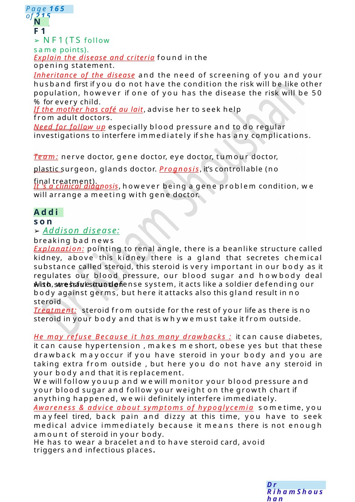
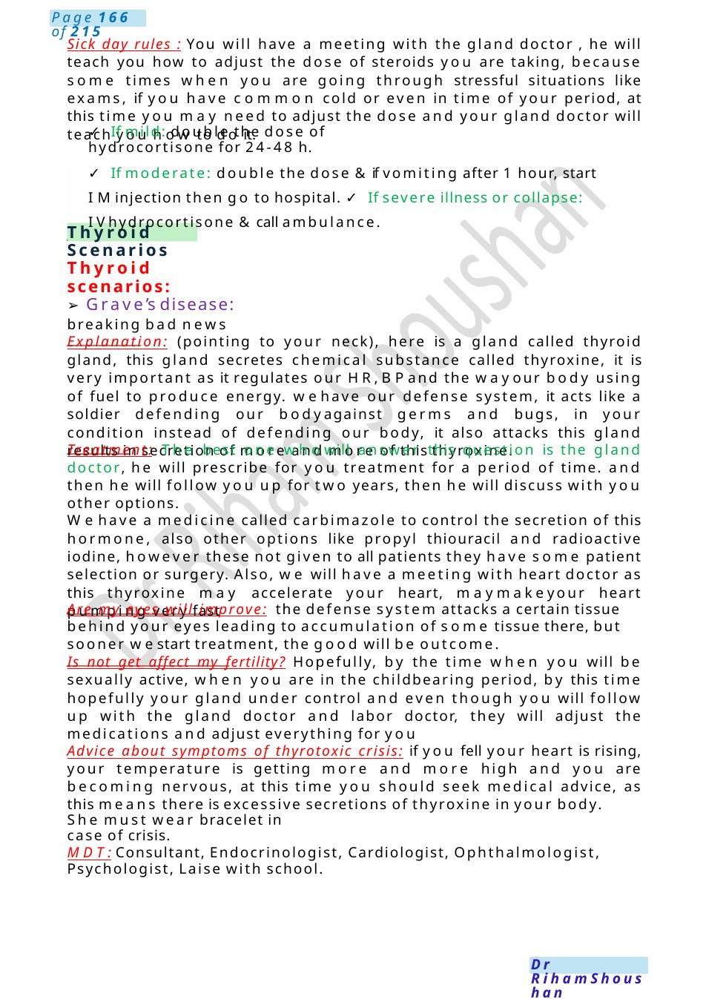

Addison
Explain the disease and criteria found in the opening statement. Inheritance of the disease and the need of screening of you and your husband first if you do not have the condition the risk will be like other population, however if one of you has the disease the risk will be 50 %for every child.
Scenario Summary
Explain the disease and criteria found in the opening statement. Inheritance of the disease and the need of screening of you and your husband first if you do not have the condition the risk will be like other population, however if one of you has the disease the risk will be 50 %for every child.
Full Original Scenario

NF1
Addison
- NF1(TS follow same points).
Explain the disease and criteria found in the opening statement.
Inheritance of the disease and the need of screening of you and your husband first if you do not have the condition the risk will be like other population, however if one of you has the disease the risk will be 50 %for every child.
If the mother has café au lait, advise her to seek help from adult doctors.
Need for follow up especially blood pressure and to do regular investigations to interfere immediately if she has any complications.
Team: nerve doctor, gene doctor, eye doctor, tumour doctor, plastic surgeon, glands doctor. Prognosis, it’s controllable (no final treatment).
It ’s a clinical diagnosis, however being a gene problem condition, we will arrange a meeting with gene doctor.
- Addison disease: breaking bad news
Explanation: pointing to renal angle, there is a beanlike structure called kidney, above this kidney there is a gland that secretes chemical substance called steroid, this steroid is very important in our body as it regulates our blood pressure, our blood sugar and howbody deal with stressful situation
Also, wehave our defense system, it acts like a soldier defending our body against germs, but here it attacks also this gland result in no steroid
Treatment: steroid from outside for the rest of your life as there is no steroid in your body and that is whywemust take it from outside.
He may refuse Because it has many drawbacks : it can cause diabetes, it can cause hypertension , makes meshort, obese yes but that these drawback mayoccur if you have steroid in your body and you are taking extra from outside , but here you do not have any steroid in your body and that it is replacement.
Wewill follow youup and wewill monitor your blood pressure and your blood sugar and follow your weight on the growth chart if anything happened, wewii definitely interfere immediately.
Awareness & advice about symptoms of hypoglycemia sometime, you mayfeel tired, back pain and dizzy at this time, you have to seek medical advice immediately because it means there is not enough amount of steroid in your body.
He has to wear a bracelet and to have steroid card, avoid triggers and infectious places.

Thyroid Scenarios
Sick day rules : You will have a meeting with the gland doctor , he will teach you how to adjust the dose of steroids you are taking, because some times when you are going through stressful situations like exams, if you have common cold or even in time of your period, at this time you may need to adjust the dose and your gland doctor will teach you how to do it.
- If mild: double the dose of hydrocortisone for 24-48 h.
- If moderate: double the dose &if vomiting after 1 hour, start IMinjection then go to hospital. ✓ If severe illness or collapse: IVhydrocortisone &call ambulance.
Thyroid scenarios:
- Grave’s disease: breaking bad news
Explanation: (pointing to your neck), here is a gland called thyroid gland, this gland secretes chemical substance called thyroxine, it is very important as it regulates our HR,BPand the wayour body using of fuel to produce energy. wehave our defense system, it acts like a soldier defending our bodyagainst germs and bugs, in your condition instead of defending our body, it also attacks this gland results in secretion of more and more of this thyroxine.
Treatment: The best one whowill answer this question is the gland doctor, he will prescribe for you treatment for a period of time. and then he will follow you up for two years, then he will discuss with you other options.
Wehave a medicine called carbimazole to control the secretion of this hormone, also other options like propyl thiouracil and radioactive iodine, however these not given to all patients they have some patient selection or surgery. Also, we will have a meeting with heart doctor as this thyroxine may accelerate your heart, maymakeyour heart pumping very fast
Are my eyes will improve: the defense system attacks a certain tissue behind your eyes leading to accumulation of some tissue there, but sooner westart treatment, the good will be outcome.
Is not get affect my fertility? Hopefully, by the time when you will be sexually active, when you are in the childbearing period, by this time hopefully your gland under control and even though you will follow up with the gland doctor and labor doctor, they will adjust the medications and adjust everything for you
Advice about symptoms of thyrotoxic crisis: if you fell your heart is rising, your temperature is getting more and more high and you are becoming nervous, at this time you should seek medical advice, as this means there is excessive secretions of thyroxine in your body.
She must wear bracelet in case of crisis.
MDT:Consultant, Endocrinologist, Cardiologist, Ophthalmologist, Psychologist, Laise with school.